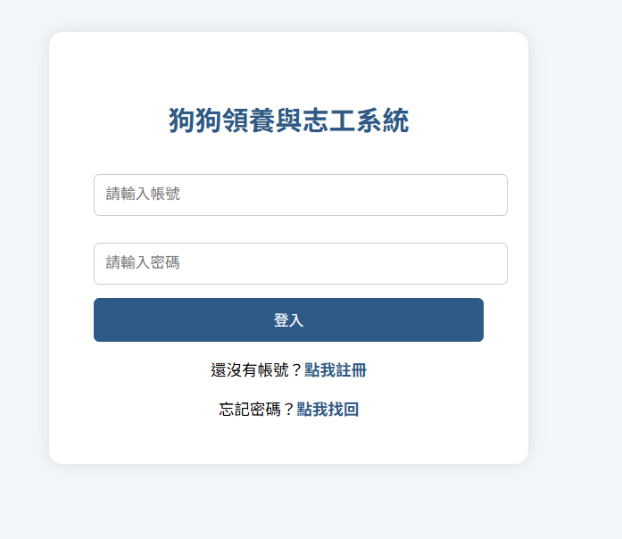

狗狗領養＆志工系統
Dog Adoption & Volunteer Management System
以 PHP + MySQL 從零建置的動物之家管理系統，把狗狗資料管理、 領養申請審核、志工活動報名三條原本分散的流程， 整合在同一套關聯式資料庫與同一個後台之中。專案重點不在前端視覺， 而在資料表關聯設計、跨資料表的狀態同步，以及以 Session 控管的角色權限流程。
database/schema.sql。
01專案概觀
PROJECT OVERVIEW
- 專案性質
- 2025 年「資料庫程式設計」課程專案（個人獨立完成）
- 系統類型
- 伺服器端渲染（SSR）的多頁式 Web 應用
- 技術組合
- PHP、MySQL / MariaDB、HTML / CSS、Apache
- 資料表數量
- 5 張 —
users、dogs、adoption_requests、volunteer_events、volunteer_signups - 程式規模
- 22 個功能頁面 PHP 檔案，約 1,600 行程式碼
- 角色設計
- 一般使用者（
user）與管理員（admin），以 Session 中的role欄位控管 - 執行環境
- 開發：XAMPP（Apache + MariaDB + PHP）／公開 Demo：InfinityFree（PHP + MySQL）
- 公開 Demo
- dog-adopt.xo.je/demo/ — 安全化展示版本，使用獨立 Demo 資料庫
問題與動機
小型動物之家在管理送養與志工事務時，常見的痛點是：
- 資料分散：狗狗基本資料、領養申請單、志工名單分別存放在紙本或多份試算表。
- 狀態不同步：狗狗已被領養，但公開送養名單沒同步更新，造成重複申請。
- 名額難以掌握：志工活動人工統計報名，容易超收，也難以避免重複報名。
- 審核不透明：申請人送出表單後，無法查詢自己的審核進度。
- 三種資料統一存放於同一個關聯式資料庫，透過 ID 欄位互相關聯。
- 審核通過時同步將狗狗標記為已領養（
dogs.is_adopted = 1），前台清單即時反映。 - 報名時以
COUNT(*)比對活動上限max_people，額滿即擋下，並防止重複報名。 - 使用者可於「我的領養紀錄」查詢每一筆申請的狀態（待審核／已通過／已拒絕）。
02我的角色
MY ROLE
個人專案，從需求發想到整合測試皆由本人獨立完成。
- 資料庫設計：規劃 5 張資料表的欄位、型別與關聯邏輯（
database/schema.sql）。 - 後端開發：以 PHP 撰寫 22 個功能頁面，含 CRUD、JOIN 查詢、動態條件搜尋與檔案上傳。
- 身分驗證與權限：以 PHP Session 保存登入狀態，並依
role區分一般使用者與管理員可存取的頁面。 - 前端頁面：以 HTML / CSS 撰寫所有表單、清單、卡片與後台表格版面。
- 測試與整合：於 XAMPP（Apache + MariaDB）環境進行整合測試。
- Demo 部署：另行整理一份安全化的展示版本，建立獨立的 Demo 資料庫與示範資料後部署上線，讓這套系統不必架設環境就能實際操作。
03核心功能
CORE FEATURES
以下功能皆對應 repository 中實際存在的程式碼檔案。
使用者帳號
users，角色預設為 user。user_id、username、role。session_destroy() 後導回登入頁。狗狗資料
dog_id 查詢單筆資料；目前由後台領養申請表格中的狗狗名稱連結進入。uploads/，未上傳則套用預設圖）。領養流程
adoption_requests，狀態由資料庫預設為「待審核」。adoption_requests JOIN dogs，只顯示目前登入者本人的申請。adoption_requests JOIN users JOIN dogs，可通過／拒絕／刪除申請。admin_adoptions.php 在審核「通過」時，
除了把申請狀態改為「已通過」，同時執行 UPDATE dogs SET is_adopted = 1，
讓前台清單自動將該狗狗歸類為「已領養」。
志工活動
volunteer_signups。volunteer_signups JOIN volunteer_events JOIN users，可刪除報名紀錄。管理員後台
list_dogs.php 會額外顯示四個後台入口，其中之一為狗狗的新增／編輯／刪除。volunteer_events（志工活動本身）目前沒有後台新增介面，
活動資料需直接於資料庫建立；後台僅管理報名紀錄。
04系統流程
SYSTEM FLOW
系統以 login.php 為入口，登入後由 Session 中的 role 決定看到的是
一般使用者流程或管理員後台。
register.php → register_process.php寫入
users，role = userlogin.php → login_process.php比對帳號密碼
list_dogs.php：卡片列表 + 狀態／體型／年齡／性別條件搜尋，並依 role 顯示不同導覽adopt_form.php申請資料 + 4 項資格切結
submit_adoption.phpstatus = 待審核
user_adoptions.phpvolunteer.php即時計算名額
volunteer_signup.phpsubmit_volunteer.php防重複後寫入
add_dog.php / edit_dog.php / delete_dog.phpadmin_users.php / delete_user.phpadmin_adoptions.php：通過／拒絕／刪除admin_volunteers.phpadmin_adoptions.phplist_dogs.php 將該狗狗歸類為「已領養」dog_profile.php）在現行程式碼中，
是由管理員後台的領養申請列表點擊狗狗名稱進入。
05資料庫設計 / ERD
DATABASE / ERD
5 張資料表分為主體資料（users、dogs、volunteer_events）
與關聯／交易資料（adoption_requests、volunteer_signups）。
以下欄位定義完全取自 database/schema.sql，所有資料表皆為 InnoDB / utf8mb4。
資料表關聯
資料表結構
- PKuser_idint
- usernamevarchar(50)
- passwordvarchar(255)
- emailvarchar(100)
- rolevarchar(20)
- namevarchar(50)
- PKdog_idint
- namevarchar(50)
- breedvarchar(50)
- sizevarchar(10)
- gendervarchar(5)
- health_statustext
- descriptiontext
- image_urlvarchar(255)
- is_adoptedtinyint(1)
- age_yearint
- age_monthint
- PKrequest_idint
- RELuser_idint
- RELdog_idint
- applicant_namevarchar(50)
- phonevarchar(20)
- messagetext
- request_timetimestamp
- statusvarchar(20)
- confirm_20tinyint
- no_abandontinyint
- accept_chiptinyint
- accept_neutertinyint
- PKevent_idint
- event_namevarchar(100)
- event_timedatetime
- max_peopleint
- PKsignup_idint
- RELevent_idint
- RELuser_idint
- signup_timetimestamp
user_id、dog_id、event_id）
在應用層以 SQL JOIN 建立關聯，尚未於 schema.sql 宣告 FOREIGN KEY Constraint；
因此資料完整性（例如刪除使用者後其申請紀錄成為孤兒資料）目前由應用程式邏輯負責，
而非由資料庫層強制。補上 FK 與 ON DELETE 行為列於改善方向。
06技術架構
TECHNICAL ARCHITECTURE
架構特點
- 無框架的多頁式架構：每個
.php檔案同時扮演控制器與視圖，頁面開頭先做 Session 與角色檢查，再進行資料查詢，最後輸出 HTML。 - 伺服器端權限守門：管理員頁面於檔案最上方檢查 Session 中的
role是否為admin，未通過即中止執行。 - 資料庫存取：主要查詢使用 mysqli Prepared Statement 搭配
bind_param()；動態搜尋條件則以陣列累積參數與型別字串後展開綁定（list_dogs.php）。 - 檔案儲存分離：狗狗照片以
uniqid()前綴命名後存放於uploads/，資料庫僅保存相對路徑（dogs.image_url）；刪除狗狗時一併移除實體檔案。 - 連線設定與程式碼分離：資料庫帳密置於
db.php，不納入版本控制，repository 僅提供db.example.php範本。
07公開 Demo 與部署
DEMO / DEPLOYMENT
課程結束後，我把這套系統整理成一份可以實際操作的公開 Demo，讓閱讀這份 Case Study 的人不必自行架設環境，也能走完登入、領養申請、志工報名與後台審核的完整流程。
展示策略
公開 Demo 的目的是完整呈現系統流程，而不是開放一套可任意寫入的正式系統，因此上線前做了以下安全化調整：
- 資料來源分離：公開 Demo 使用獨立的 Demo 資料庫，與原始專案的資料完全分開，操作 Demo 不會影響任何舊有資料。
- 帳號皆為展示帳號：Demo 提供一般使用者與管理員兩組展示帳號，不含任何真實使用者資料。
- 申請與志工資料為虛構：領養申請與志工報名紀錄，皆是為了呈現流程而建立的虛構展示資料。
- 狗狗資料沿用專案素材：狗狗照片與基本資料沿用原專案既有的展示素材，維持與課程版本一致的畫面。
- 停用破壞性操作：刪除狗狗、使用者、領養申請與志工報名等刪除類操作，在 Demo 版本中已停用，避免展示資料被清空。
- 停用高風險上傳：照片上傳等檔案寫入功能在 Demo 版本中一併停用。
Demo 帳號
兩組帳號分別對應系統的兩種角色，可直接登入體驗前台流程與管理員後台。
- 帳號
demo_user- 密碼
Demo1234!
- 帳號
demo_admin- 密碼
AdminDemo1234!
08系統畫面
SCREENSHOTS
本頁只放實際操作系統時擷取的畫面，不使用任何示意圖、AI 生成圖或網路圖片。 目前已擷取的是登入頁，其餘畫面尚未補齊；在補齊之前，也可以直接在公開 Demo 上實際操作各個頁面。

待補畫面
以下畫面已列入 repository 的 docs/screenshots/ 補齊清單，尚未擷取：
09學習與回顧
LEARNING / REVIEW
- 關聯式資料庫設計：從真實情境（送養 + 志工）拆解出 5 張資料表，區分主體資料與關聯／交易資料，理解多對多關係需要中介資料表來承載。
- JOIN 查詢的實務應用：後台的申請與報名列表需同時顯示帳號、狗狗名稱與活動名稱，實作了兩層與三層的
INNER JOIN查詢。 - 動態條件查詢：
list_dogs.php依使用者選擇的條件動態組合WHERE子句與bind_param()的型別字串，理解到「動態 SQL」與「參數化查詢」可以並存。 - 跨資料表的狀態一致性：審核通過時需同時更新
adoption_requests.status與dogs.is_adopted，實際體會到缺乏交易（Transaction）保護時，兩段 SQL 之間存在不一致的風險。 - Session 與角色權限控管：以 Session 保存登入狀態，並在每個受保護頁面最上方進行角色檢查，理解「權限必須在伺服器端驗證」，而不是只把前端按鈕藏起來。
- 檔案上傳與資料庫的分工：圖片存於檔案系統、路徑存於資料庫，並在刪除資料時一併處理實體檔案。
- 資安意識的建立：完成後回頭檢視程式碼，辨識出明碼密碼、缺少 CSRF 防護、以 GET 執行寫入操作等問題，是本專案最重要的收穫之一。
- 個資保護與版本控制：將設定檔與真實資料排除於 repository 之外，改以
.example範本與純結構 schema 對外發布。
10改善方向
FUTURE IMPROVEMENTS
以下為檢視現有程式碼後整理出的優化方向，目前皆尚未實作。
資料庫層
schema.sql 未宣告任何 FK，關聯僅靠 ID 欄位與應用層 JOIN 維持；應補上 FK 與適當的 ON DELETE 行為，避免刪除使用者或狗狗後留下孤兒資料。adoption_requests.user_id / dog_id、volunteer_signups.event_id / user_id 皆為查詢與 JOIN 的常用條件，目前無索引。UNIQUE (event_id, user_id) 可由資料庫層直接保證。dogs.is_adopted」為兩段獨立 SQL，中途失敗會造成狀態不一致。adoption_requests.status 目前為中文字串，可改為 ENUM 或狀態碼，避免拼寫不一致。安全性與驗證
password_hash() / password_verify()。forgot_password.php 目前直接顯示密碼，應改為寄送一次性重設連結（Token + 有效期限）。delete_user.php 與 admin_adoptions.php 部分刪除／更新語句仍以字串串接組成 SQL。submit_adoption.php、submit_volunteer.php 直接讀取 Session 中的 user_id，未先驗證是否已登入。add_dog.php、edit_dog.php 未檢查副檔名、MIME type 與檔案大小。htmlspecialchars()，但 admin_users.php 直接輸出 username 與 role。volunteer_signup.php 收集了姓名／電話／備註，但 submit_volunteer.php 僅寫入 event_id 與 user_id；add_dog.php 亦未寫入 health_status 與 description。前端與工程實務
<style>，行動裝置瀏覽體驗不佳；應抽出共用 CSS 並加入 RWD。header.php、auth.php 等共用檔案。.htaccess 與一份可重現的部署說明。echo 搭配 alert() 回報結果，可改為統一的錯誤頁面與 Flash Message 機制。11GitHub Repository
SOURCE CODE